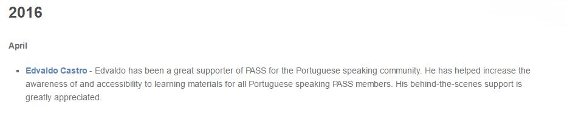

Post
Outstanding PASS Volunteer - Abril 2016
09 Jun 2016 · Comunidade e Eventos, Virtual PASS BR · COMMUNITY, OUTSTANDING PASS VOLUNTEER, OVA, Pass, sqlpass, sqlserver
Hoje, 07 de Junho fui felicitado pelo meu amigo
Wasley Portes pelo OVA (Outstanding Volunteer Award) do PASS para o mês de Abril de 2016.
Meu últimos
blog post técnico, foi em 06/01/2016 com o título:
[AlwaysOn AG] Configurando o AlwaysOn AG com múltiplas instâncias. Depois deste
blog post resolvi dar uma pausa técnica no blog, para repensar como faria para mantê-lo e melhorar conteúdo, visto que sempre me preocupei mais com qualidade do que com quantidade.
Continuei fazendo alguns trabalhos junto ao PASS com traduções e uma moderação inédita no evento:
24 Hours of PASS - Evolution of the Data Platform, que foi uma experiência bem bacana ter falado (mesmo como moderador) para um público internacional.
Para minha grata surpresa, quando fui verificar o e-mail do
PASS, vi que o reconhecimento de
Outstanding Volunteer Award foi dado a minha pessoa, mesmo meu principal apoio e contribuições com a comunidade neste primeiro semestre tendo sido em fora de foco e com pouca ou nenhuma exposição.
É muito prazeroso ver algo que você contribuiu sendo publicado em seu idioma e ajudando milhares de pessoas a também terem acesso à conteúdos antes restritos aos nichos que se adequavam à determinadas variáveis (Idioma, Localização, etc).

Um pouco mais sobre o trabalho dos voluntários junto ao PASS e os voluntários destaques nos meses anteriores:
Este é um reconhecimento que normalmente é feito por indicações via e-mail à equipe do
PASS, portanto, mesmo sem ter conhecimento de qualquer indicação, quero deixar meu muito obrigado a quem por ventura possa ter tido esta visão e me indicado como Voluntário Destaque do mês de Abril.
Grande Abraço,
Edvaldo Castro